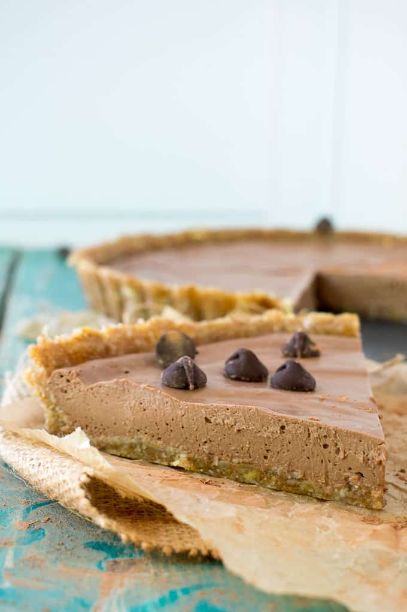

Chocolate Peanut Butter Pie
Fast, no bake, simple, clean, protein packed, and addicting
What You'll Need
- Pie Crust
- 1 Jar of Peanut Butter
- 1 Bag of Vegan Chocolate Chips
- 1 Package of Silken Tofu
- Your choice of Vegan milk
Steps
- Using a large mixing bowl, dump desired amount of choclate chips in, the more the sweeter!
- Place in a microwave for 30 seconds to 1 miunte and mix until smooth
- Add Peanut Butter, the more the thicker the pie will be
- Add some Vegan milk, not too much or it will be too soft
- Mix together until smooth
- pour mixture into crust
- Place in fridge for 12 to 24hrs!
- Enjoy.
Back to homepage